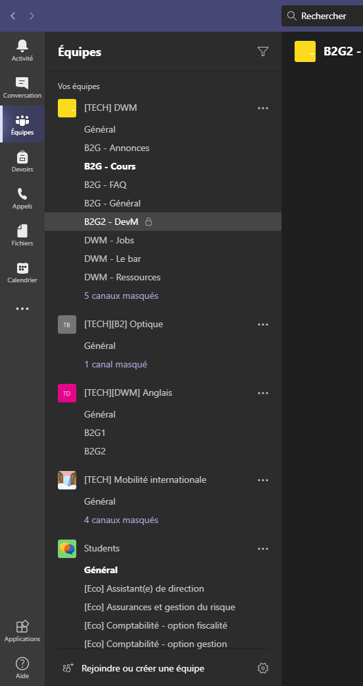
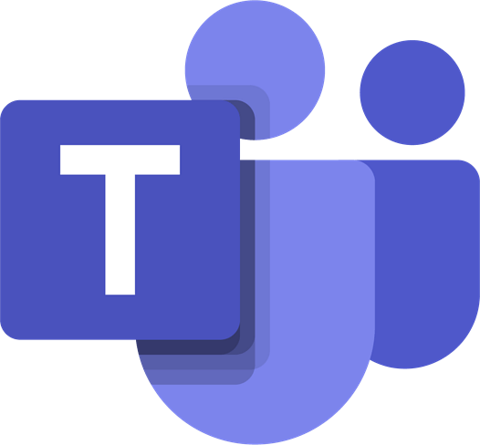
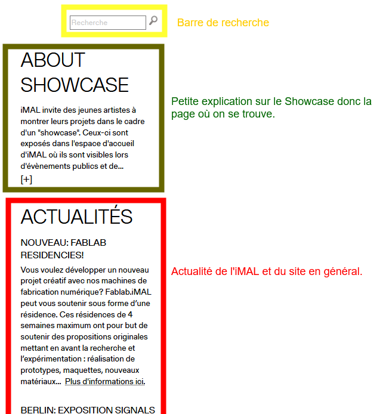
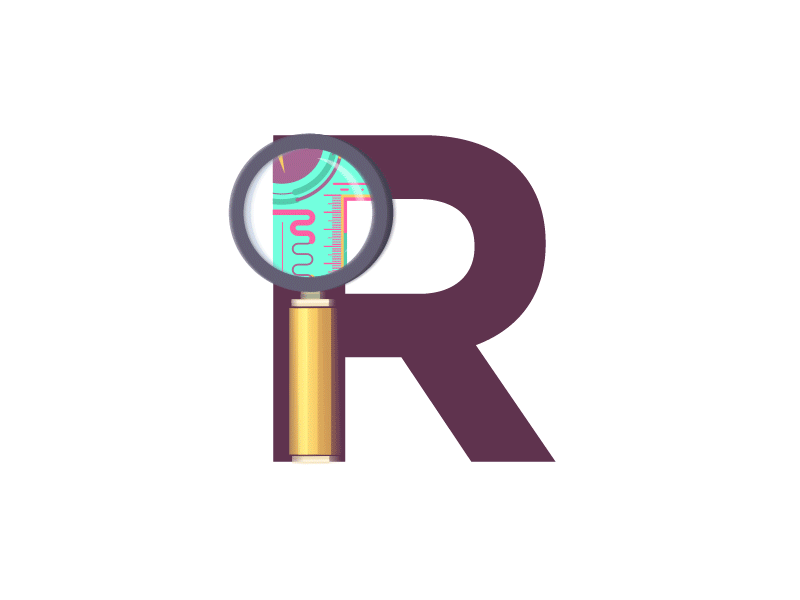
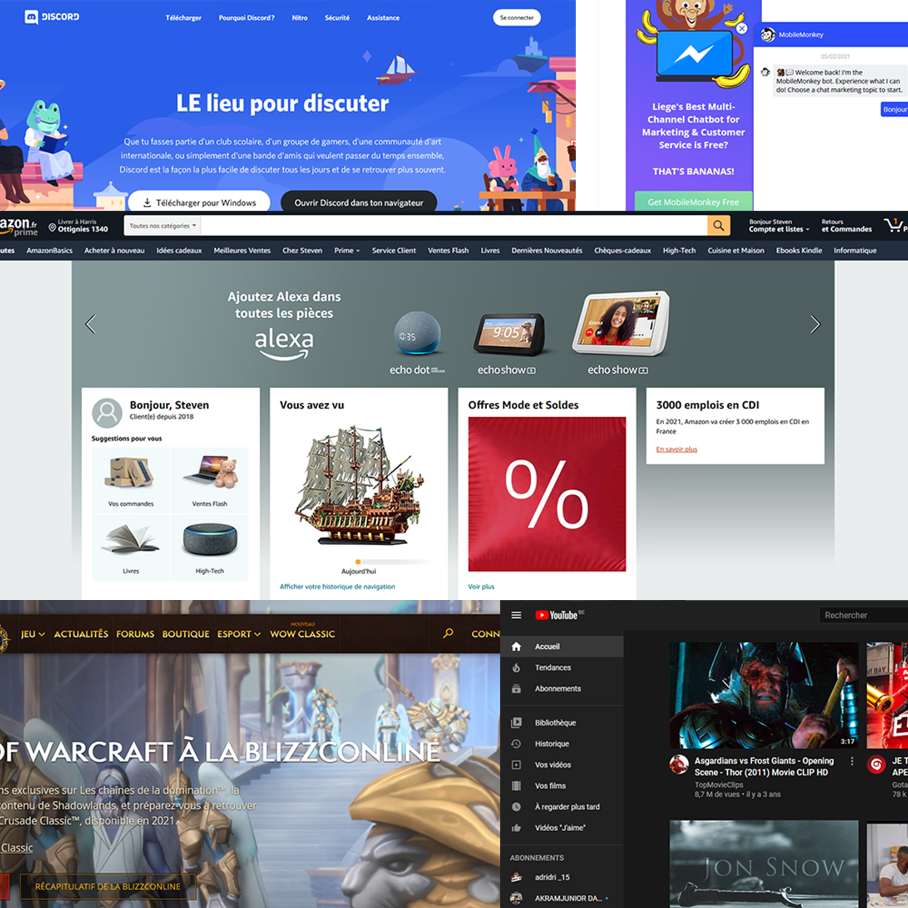
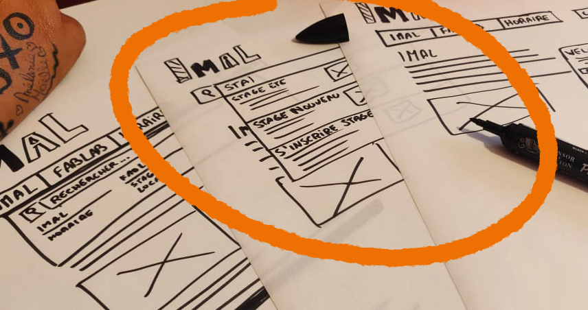

Case-Study
Nos « vacances »
Les prémices de RUX ont débuté avant la période de blocus. On devait réaliser une vidéo d’un test utilisateur sur le site de l’iMAL. Une fois la vidéo enregistrée, on devait l’analyser et réaliser un article médium.
Après ce travail d’analyse, on a tous pu prendre pleinement connaissance du site de l’iMAL. Nous savions à peu prêt tout ce qui n’allait pas sur le site. Notre conclusion était que le site était surchargé et que les infos utiles étaient noyés dans le site.
Retour en cours


Au premier cours sur RUX, on s’est réparti en équipe de 4. Je me suis mis avec Anais, Tanguy et Maxime. On avait déjà fait des travaux de groupe et ça c’était bien passé.
La première étape était de réaliser un résumé du test utilisateur en groupe. On s’est mis sur discord pour en parler et le rédiger, cela ne nous a pas pris énormément de temps.
Le résumé donne ceci :
“L’iMAL est un centre créatif situé à Bruxelles qui organise des événements et des ateliers en rapport avec la création artistique allant jusqu’au domaine plus scientifique. Ils mettent à disposition leurs machines aux particuliers pour des créations personnelles.”
Réflexion au réveil

Au deuxième cours qui se déroulait de bon matin. Nous avons chacun fait un inventaire de contenu de deux pages du site. Il fallait regrouper chaque élément des pages et dire leur utilité ou leur fonction. On les a toutes passées en revue une fois que tout le monde avait fini. Ça m'a aidé à mieux visualiser la structure globale du site.
Le choix décisif
Dans la deuxième heure de ce cours, nous avons listé toutes les différentes actions qu’il était possible de réaliser sur le site. Une fois listée, place à la démocratie.
Les tasks gagnantes étaient celles-ci :
- S'inscrire à un atelier
- Louer un espace
- Consulter les horaires
- Devenir membre du FabLab
- Faire une recherche dans le site
Les groupes devaient se répartir les tâches élus. Mon groupe a pris la recherche, qui au premier abord semble être un élément très simple du site mais qui au final cache bien son jeu.

Il était maintenant temps de réfléchir sur lesbesoins utilisateurs de la recherche. On ne s’est pas contenté de dire “ça recherche”. Nous avons vraiment essayé de pousser l’analyse le plus loin possible mais nous avons remarqué qu’on tourne vite en rond. En plus des besoins utilisateurs, nous avons listé des améliorations qui pouvaient aider l’utilisateur avec la recherche.
Audit

Cette étape du travail m’a un peu donné du mal. Nous n’avions qu’une heure pour réaliser l’analyse de notre fonctionnalité (pour moi la recherche) sur 5 sites différents. Ce qui donne environ 12 minutes par site. Le plus dur dans tout ça était de trouver les sites à analyser. Quasiment tous les sites utilisent une barre de recherche donc j’ai eu un peu de mal pour faire mon choix. J’ai finalement réussi à finir mon analyse dans les temps.
Homework

A la fin du cours précédent, nous avions eu comme devoir de réaliser des croquis de notre fonctionnalité de différentes façons. Nous devions réfléchir à une solution pour le site de l’iMAL qui visait à améliorer le site. Comme ma fonctionnalité est “faire une recherche”, j’ai fait deux croquis de barre de recherche qui sont assez différents dans leur fonctionnement et affichage. Mon troisième croquis, lui, était un chat bot.
Après les avoir passés en revue avec Monsieur Marchal en cours, j’ai décidé de me diriger vers le croquis n°2. C’est celui qui me parlait le plus et où j’imaginais déjà comment le réaliser.
User Journey
Le User journey est une des étapes qui m’a donné le plus de mal. J’ai dû imaginer 3 situations différentes où des utilisateurs effectuent une recherche sur le site de l’Imal. J’ai réussi à en tirer quelques conclusions comme le fait de trier les résultats qui s’affiche (le plus pertinent au dessus), faire une barre de recherche repérable facilement mais aussi des propositions déjà présentes avant même d’écrire quelque chose.
Dessin au propre
Une fois le User Journey finis et analysé, il était temps de faire les croquis de ma fonctionnalité au propre. J’ai décidé de partir sur une barre de recherche avec des propositions de résultats qui s’affichent en temps réel.
La barre se présente d’abord sous la forme d’une loupe, une fois que l’on clique dessus elle se déploie pour laisser apparaître un endroit où écrire et des résultats directement proposés. Les recherches qui sont affichées directement sont celles qui sont le plus effectuées sur le site pour peut-être directement répondre au besoin de l’utilisateur. Au moment de l’écriture de la recherche les résultats affichés en dessous changent et affiche en premier le plus pertinent. La possibilité de scroller dans les recherches est présente pour éviter à l'utilisateur d’arriver sur une page qui liste les résultats.